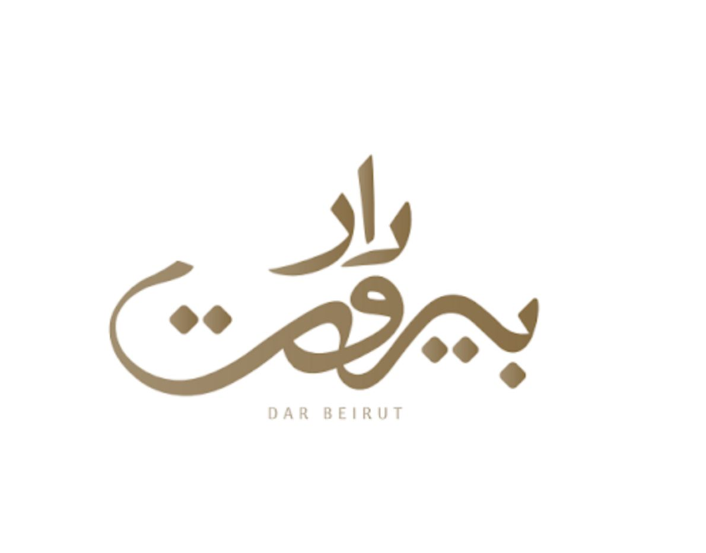

صورة الطبق
برلوش حلومي
27 ر.سخبز بريوش قطني يعلوه شرائح الحلومي المشوية مع لمسة من الطماطم والزعتر.

نكهات بيروت الأصيلة، بلمسة عصرية فاخرة
خبز بريوش قطني يعلوه شرائح الحلومي المشوية مع لمسة من الطماطم والزعتر.
سلطة بيروت الخاصة تجمع بين تشكيلة الخضار الطازجة والفواكه المختارة مع صوص التمر المميز بتوازن فريد.
6 حبات من ورق العنب الفاخر، محشوة بخلطة الأرز والأعشاب مع لمسة حامضة من دبس الرمان.
مكعبات حلومي محمرة مع الطماطم والفلفل الملون والزيتون والزعتر البري.
فول مدمس بالخلطة اللبنانية، يُقدم بلمسة زيت الزيتون والطحينة والكمون.
طبق الحمص التقليدي يعلوه قطع لحم طازجة مع المكسرات وزيت الزيتون.
طبق صحي ومنعش يتكون من مجموعة متنوعة من الخضروات الطازجة المقطعة بشكل مرتب وجذاب.
كبدة غنم طازجة مطهوة بتتبيلة دار بيروت الخاصة مع الخضار.
خبز خاص يعلوه بيض بوشيه مع شرائح السلمون المدخن وصوص الأفوكادو الغني والصوص الفرنسي.
لبنة طازجة مغطاة بالزعتر وزيت الزيتون.
خبز خاص يعلوه بيض بوشيه فوق طبقة من المشروم المحمر مع صوص الريحان والأفوكادو والصوص الفرنسي.
خبز التاكو محشو بقطع الدجاج المتبلة مع الخضار الطازجة وصوصنا الخاص، طعم يجمع القرمشة والطراوة.
بيض مطهو بعناية ومحشو بمزيج من الأجبان الذائبة.
طبقات من الخبز المقرمش والحمص مع اللحم المفروم، مغطاة بصوص الزبادي والمكسرات.
خبز بريوش قطني يعلوه طبقة من بيض الأومليت الخفيف والجبن.
فلافل بتقديم عصري داخل خبز التاكو مع صوص الطحينة والخضار والمخلل.
كرواسون باريسي هش محشو ببيض مخفوق كريمي.
قطع لحم طرية محمرة مع الخضار والبهارات العربية الأصيلة.
بيض مسلوق، مطهو بصلصة الطماطم والفلفل على الطريقة العثمانية.
تناغم مميز بين الجبن المالح والباذنجان المقلي.
بيض مع قطع الفلفل الملون، البصل، والطماطم.
خلاصة الحمص بالطحينة، ناعم كالحرير ومزين بزيت الزيتون.
مزيج الحمص التقليدي مع الطماطم والبقدونس والكمون لمذاق بيروتي أصيل.
الحمص اللبناني الشهير ممزوجاً بنكهة الريحان الإيطالي الطازج.
باذنجان مشوي على الفحم بخلطة الخضروات الطازجة وزيت الزيتون البكر.
التبولة اللبنانية على أصولها، ببساطة طعم ما ينشبع.
الفتوش اللبناني التقليدي كما تحبه، مضافاً إليه قطع المانجو الاستوائية لنكهة مبتكرة.
أوراق الجرجير الطازجة مع قطع التفاح والفيتا، تزينها قرمشة الجوز وحبات الرمان بلمسة البلساميك.
التبولة برؤية عصرية، كينوا صحية مع قطع المانجو والعنب والفراولة بلمسة دبس الرمان.
أوراق الخس العربي الطازجة المقطعة بصوص السيزر الغني، مع قطع الدجاج المشوية، وخبز الكروتون المقرمش.
كبدة دجاج محضرة بطريقة دار بيروت الخاصة، بلمسة مقرمشة وحامضة غنية بالنكهات الأصيلة.
مكعبات البطاطس المقرمشة والمقلية مع لمسة من الفلفل الحار والليمون.
أصابع البطاطس الذهبية والمقرمشة محضرة بخلطة بهارات دار بيروت الخاصة.
أعواد من جبن الموزاريلا تغطى بالبقسماط المقرمش، تقلى حتى يذوب الجبن من الداخل.
لفائف مقرمشة ذهبية محشوة بمزيج من الأجبان الذائبة.
3 حبات من الكبة المحشوة باللحم والمكسرات، مشوية على الفحم لتكسب طعماً مدخناً لا يُنسى.
4 قطع من ريش الغنم الطرية المشوية، تُقدم مع البطاطس المهروسة الغنية بالزبدة.
3 أسياخ من قطع لحم الغنم الطرية مشوية لدرجة الكمال وتُقدم مع البطاطس المقلية.
3 أسياخ من قطع الدجاج المشوية ببطء وتُقدم مع البطاطس المقلية.
3 أسياخ من الدجاج المشوية بعناية وتُقدم مع البطاطس المقلية.
3 أسياخ من لحم الغنم الطازج المشوي على الفحم وتُقدم مع البطاطس.
3 أسياخ من كباب اللحم المشوي، تغمرها صلصة الكرز والتوت البري الحلوة، تُقدم مع البطاطس.
3 أسياخ من كباب اللحم الفاخر المشوي، تُقدم بلمستنا الخاصة فوق طبقة من المتبل بمزيج دار بيروت.
تشكيلة فاخرة من 6 أسياخ (لحم ودجاج) مع حبة ريش طرية وحبة كبة مقلية، تُقدم مع البطاطس المقلية.
خبز محشو باللحم المتبل والمشوي على الفحم، يقدم مقرمشاً بلمسة لبنانية أصيلة.
وجبة مشاوي عائلية مكونة من كبابين لحم وشيش طاووقين وكبابي دجاج وأوصال غنم، تُقدم مع السلطة والأرز.
وجبة مكونة من سيخين شيش طاووق مع السلطة والأرز.
وجبة مكونة من سيخين كباب دجاج مع السلطة والأرز.
وجبة مكونة من سيخين كباب لحم مع السلطة والأرز.
وجبة مكونة من سيخين أوصال لحم مع السلطة والأرز.
مزيج فريد يجمع بين خبز التاكو ولحم الغنم المطهو بصلصة الكرز الحلوة لتقديم طعم لا يُنسى.
حبات ورق العنب المقطعة مع صوص الزبادي والخبز المحمص وحبات الرمان.
طبقات من الباذنجان المقلي، الخبز المقرمش، وصوص الزبادي، تُزين بالبصل المقرمش والمكسرات.
3 قطع فاخرة من لحم التندرلوين الطري، مغطاة بصوص المشروم الغني، وتُقدم مع البطاطس المهروسة.
شريحة سلمون (250غ) مشوية بعناية مع صوص الليمون، تُقدم مع بطاطس مهروسة وخضار مشوية.
كفتة اللحم التقليدية مطهوة مع صوص الطماطم الطازج.
أرز أبيض فاخر مطهو على البخار يعلوه مكسرات وبصل مقرمش، الرفيق المثالي لجميع أطباقنا.
4 حبات كبة لحم بلمسة دار بيروت، تُقدم مع صوص اللبن المخمّر الدافئ، المزين بالصنوبر وتقلية الكزبرة.
كفتة لحم مشوية في فخار مع صوص الطحينة الكريمي، لمذاق غني وأصيل.
لحم بريسكت سلايدر بلمسة دار بيروت، يُقدم في خبز البرجر الطري وبجانبه أصابع البطاطس المقلية.
سلايدر الدجاج المقرمش بخلطتنا الخاصة، يجمع بين طراوة الخبز ولذة الدجاج، يُقدم مع البطاطس المقلية.
قطع الدجاج المقرمشة والمغموسة بصوص الدايناميت بطعم لا يقاوم.
قطع الدجاج المقرمشة والمغموسة بصوص الدايناميت، بلمسة دار بيروت المتوازنة.
مزيج حريري من الأرز الإيطالي الفاخر مع قطع الدجاج الطازجة والأعشاب.
أرز إيطالي كريمي بنكهة المشروم البري والبارميزان.
صدر دجاج مطهو بالأعشاب العطرية والكريمة الغنية مع الجبن، يُقدم بجانبه بطاطس مهروسة ناعمة.
شوربة العدس التقليدية المحضرة على الطريقة اللبنانية الأصيلة، تُقدم دافئة مع قطع الخبز المحمص والليمون.
شوربة دجاج غنية بالكريمة الناعمة والمذاق المميز، تحتوي على قطع دجاج طازجة مع خضروات متنوعة.
بيتزا لذيذة مع طبقة من صوص الطماطم الطازج، بقطع دجاج مشوي مع خضروات مثل الفلفل الأحمر.
مزيج طازج من الفلفل الملون، الزيتون، المشروم، والذرة مع صلصتنا الخاصة.
الطعم الإيطالي الكلاسيكي، صلصة طماطم طازجة ومكس أجبان.
شرائح بيبروني مقرمشة فوق طبقة سخية من جبن الموزاريلا الذائب.
معكرونة بيني بصوص طماطم طازج، مزينة بأوراق الريحان العطرة، ومزودة بلمسة من زيت الزيتون.
المذاق الإيطالي التقليدي بصلصة اللحم والطماطم الغنية.
شرائط الباستا الكلاسيكية بصوص الألفريدو الأبيض مع الفطر والدجاج.
باستا بصلصة الطماطم الحارة مع الكريمة وحبات الجمبري بطريقتنا الخاصة.
سحاب من كريمة الماسكاربوني الفاخرة مع بسكويت مشبع بنكهة القهوة المركزة.
كوكيز ساخن ومقرمش مخبوز في المقلاة، محشو بشوكولاتة الكيندر الذائبة مع إضافة الآيسكريم.
كيكة إسبانية شهيرة، تتميز بقوامها الكريمي والذائب في الفم.
مزيج فاخر من الكيك الغني بالشوكولاتة وقطع البندق المحمص للقرمشة المثالية.
طبقة تشيز كيك غنية تعلوها لمسة صوص البيكان.
قهوة الإسبريسو مع الحليب ومكعبات الثلج.
قهوة الإسبريسو مع الحليب والثلج والحليب المكثف المحلى.
جرعة من قهوة الإسبريسو المخففة مع الثلج.
قهوة سوداء مثلجة محضرة بطريقة التقطير.
إسبريسو ساخن مركز بالمذاق المُر.
قهوة مكونة من الإسبريسو مع الحليب الرغوي.
قهوة الإسبريسو مع الحليب المبخر.
قهوة الإسبريسو مع الحليب المبخر والحليب المكثف المحلى.
قهوة الإسبريسو مع حليب مبخر ورغوة.
مشروب قهوة بنكهة الكراميل، مزيج من الحليب والإسبريسو.
قهوة محضرة بالطريقة التركية التقليدية.
شوكولاتة محلاة مع حليب طازج.
قهوة مخففة من الإسبريسو، تتميز بطعمها القوي والمرارة الخفيفة.
قهوة الإسبريسو المركزة مع الحليب المبخر والرغوة.
قهوة سوداء ساخنة محضرة بطريقة التقطير.
مشروب منعش مكون من سفن أب الفوار مع نكهة التوت الطازجة والأعشاب.
مشروب موهيتو مميز مع الكودريد المنعش ونكهة التوت الحلوة مع النعناع والليمون.
خليط مميز يحتوي على سفن أب الفوار مع نكهات الفواكه المنعشة وأوراق النعناع.
مشروب موهيتو بلمسة كودريد مفعمة بالحيوية، مع نكهة البطيخ الحلو المنعش.
كودريد مفعم بالحيوية مع نكهة الفراولة الطبيعية وأوراق النعناع والليمون.
سفن أب منعش مع نكهة البطيخ الطازج، وأوراق النعناع وشرائح الليمون.
سفن أب خفيف ومنعش يجمع بين سفن أب الفوار ونكهة الفراولة الطازجة.
عصير منعش محضر من البرتقال الطازج.
عصير منعش محضر من الليمون والنعناع الطازج.
عصير منعش محضر من المانجو الطازج.
عصير منعش محضر من الفراولة الطازجة.
عصير منعش محضر من الجوافة الطازجة.
مزيج مميز من الفواكه الطازجة الموسمية، يُعد بعناية لخلق نكهات متوازنة ومنعشة.
مزيج محلي ساحر من العنب الأسود والتوت البري والبرقوق الطازج.
مياه عذبة للشرب، نقية ومنعشة.
مشروب غازي بنكهة فريدة ومنعشة.
مشروب غازي بنكهة فريدة ومنعشة بدون سكر.
مشروب غازي بنكهة فريدة ومنعشة.
مشروب غازي بنكهة فريدة ومنعشة مع نكهة البرتقال.